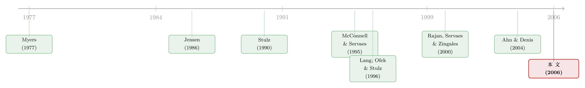

杠杆这把「刀」，砍向了谁？——多元化公司里被偷偷重新分配的债务约束
本文读的是 Ahn, Denis & Denis (2006, JFE)：在多元化公司内部，杠杆对投资的抑制作用，对高 q 部门远强于低 q 部门、对非核心部门远强于核心部门——这和聚焦型公司恰好相反。作者由此提出一个被忽略的机制：多元化的组织结构，给了管理层「替各个部门分配债务约束」的自由裁量权，而正是这份自由，悄悄抵消了债务本该带来的纪律。
1 一个被问了三十年的老问题，和一个被忽略的角落
杠杆和投资到底有没有关系？这是公司金融里被反复咀嚼的一道题。
在最初的 Modigliani-Miller 世界里，答案是「没关系」：只要项目是正净现值 (positive NPV) 的，公司总能融到钱，资产负债表长什么样都无所谓。但后来的资本结构文献几乎一致地推翻了这一点。Myers (1977) 告诉我们，当杠杆足够高时，正 NPV 的项目也可能因为债务积压 (debt overhang) 而被迫放弃——前期的债务像一块压在身上的石头，新项目赚的钱要先去喂旧债主，股东自然不愿出钱。Jensen (1986) 和 Stulz (1990) 则从另一个方向预测了同样的负相关：对低成长公司而言，债务恰恰是好东西，因为它限制了管理层把自由现金流 (free cash flow) 拿去乱花的空间。
（关于 Jensen 这条「自由现金流」的暗线，可参见《现金为什么一定要「还」出去？——四十年后，重读 Jensen 的自由现金流》。）
于是「杠杆抑制投资、且对成长机会差的公司有益」几乎成了共识。Lang, Ofek & Stulz (1996) 用一个大样本把它钉死：杠杆和未来成长负相关，而且这种负相关只存在于低 q 公司——市场认得出来的好机会，杠杆动不了它。
故事到这里似乎已经讲完了。但 Lang et al. (1996) 顺手留下了一个让人不安的小尾巴：在多元化公司里，杠杆对非核心部门成长的抑制，和对核心部门的抑制一样强。这就奇怪了。如果非核心部门和核心部门的成长机会本就不同，一个有效率的债务分配，应该把更重的约束压在机会更差的部门上才对。为什么压力是「一视同仁」地分下去的？
接着，一个自然的问题浮出水面：在一家多元化公司里，到底是谁的投资被杠杆约束了？
2 把「债务约束」当成一种可以分配的资源
这正是本文的切入点，也是它最聪明的地方。
想象一家有好几个事业部的多元化公司。总部在做资本预算时，等于在隐性地把整个公司的债务偿付负担 (debt service) 分摊到各个事业部头上。已有研究（Berger & Ofek, 1995；Comment & Jarrell, 1995）早就发现，多元化公司的杠杆率比聚焦型同行更高。但问题在于：即便这份高杠杆约束了公司整体的投资，事前我们也无法知道，究竟哪个部门的投资会被牺牲。
换句话说，多元化这种组织结构，本身就给了管理层一份自由裁量权——他们可以决定，把债务的紧箍咒戴到哪个部门的头上。
这就把一个老问题翻新了。债务的纪律作用 (disciplinary role) 在聚焦型公司里是清晰的：钱紧了，差项目就上不了。但在多元化公司里，「钱紧了」之后还有一道暗门——总部可以选择让谁先勒紧裤腰带。如果它选择勒紧那些本该好好投资的部门，而放松那些本不该多投的部门，那么债务的纪律作用就被这层组织结构稀释掉了。
本文要做的，就是把这道暗门撬开看一眼。
3 识别策略：用「超额杠杆」给部门做体检
难点在于：我们看不到单个部门的杠杆。Compustat 报告的是公司层面的负债，事业部并不单独披露资本结构。作者的办法，是仿照 Berger & Ofek (1995)，给每家公司构造一个归集杠杆 (imputed leverage, IMLEV)——假设这家公司给每个事业部都按「同行业聚焦型公司的中位数杠杆」来配债，整家公司的杠杆会是多少。
其中 \(j=1,\dots,m\) 是公司 \(i\) 的各个事业部，\(SS_{i,j}\) 是部门 \(j\) 的销售额，\(\text{INDLEV}_{i,j}\) 是与该部门同处一个三位 SIC 行业的聚焦型公司的中位数杠杆（行业内聚焦公司不足五家时退到两位 SIC）。
有了 IMLEV，实际杠杆减去归集杠杆就定义为这家公司的超额杠杆 (excess leverage)。它度量的是：相对于「行业基准应有的样子」，这家公司到底多背了多少债。
数据先验证了一个老结论：多元化公司确实更「重债」。市场杠杆实际平均 22.7%，而归集出来的只有 16.5%；账面口径下实际 0.2571 vs 归集 0.2115，差额 0.0456，在 p < 0.0001 上显著。这再次印证了 Berger & Ofek (1995) 与 Comment & Jarrell (1995)。
但真正关键的一步，是把超额杠杆和部门层面的投资接上。作者跑这样一个截面回归：被解释变量是部门的行业调整投资 (industry-adjusted investment)，解释变量是公司的超额杠杆、一个高 q 虚拟变量 \(Q_{dum}\)、一个核心虚拟变量、以及它们与超额杠杆的交乘项，外加控制变量（公司行业调整后的 Tobin's q、部门及其他部门的行业调整经营利润率），并放入年度虚拟变量和公司固定效应。标准误针对同一公司内多个观测的相关性做了调整。
这里有几个度量上的约定值得讲清楚，因为它们正是结果的「坐标系」：
- 高 q 部门：若该部门所在行业（聚焦公司中位数 q）高于全公司销售加权的 q，则记为高 q，否则低 q。
- 核心部门：销售额在公司所有部门中最大的那个。
- 投资一律用「净资本支出（资本支出减折旧）/ 销售额」的行业调整值，行业基准取同行业聚焦公司的中位数。
4 数据与一组先验事实
样本是 1982–1997 年 Compustat 上的多元化公司，定义为「至少两个事业部、且运营在不同的三位 SIC 行业」。剔除销售低于 2000 万美元、含金融业 (SIC 6000–6999)、受管制行业 (4000–4999、9000–9999)、含「corporate」部门、ADR 以及数据缺失者后，最终得到 8,674 个公司-年、24,400 个部门-年；平均每家公司报告 2.8 个部门。
这个样本的「体质」和过往研究一致：它带着典型的多元化折价 (diversification discount)。超额价值（销售口径）均值 -0.1874、中位数 -0.1577；按 Rajan et al. (2000) 的相对增加值 (RVA) 和 Ahn & Denis (2004) 的相对投资 (RINV) 衡量的投资效率也都显著为负——说明这些多元化公司在高成长行业的部门里投得太少。这一切都在重复着前人讲过的故事。
但一个反直觉的事实随即出现：尽管杠杆更高，这些多元化公司在公司整体层面反而比同行投得更多。行业调整投资均值 0.0072、中位数 0.0007，都在 1% 上显著；考虑到中位归集投资率是 0.0068，这个 0.0007 意味着它们的投资率比聚焦同行高出约 10.3%。
5 主要结果：刀，砍在了「不该砍」的地方
那么，公司整体「多投」的背后，是各个部门齐头并进吗？并不是。
把部门切开看，故事立刻反转。等权重看，中位数的事业部其实投得比同行少（公司整体却投得多，意味着大部门在拉高平均）。再按 q 高低、核心与否切分，一幅清晰的图景浮现出来：
- 只有低 q 核心部门的行业调整投资中位数显著为正（
0.0013）； - 投资最受压抑的，是非核心、高 q 部门，中位数
-0.0039； - 即便是高 q 核心部门，中位数也显著为负（
-0.0010）。
这恰恰是「拧反了」的方向：本该多投的高 q 部门反而被压住，本该收敛的低 q 核心部门反而投得最足。后半句与 Scharfstein (1998)、Rajan et al. (2000) 一脉相承。
接着是核心检验。回归结果首先复现了 Lang et al. (1996)：控制成长机会和现金流后，部门的行业调整投资与公司超额杠杆显著负相关——杠杆确实在压投资。但真正的看点在交乘项：
这种负相关，对高 q 部门显著强于低 q 部门，对非核心部门显著强于核心部门。
也就是说，同样多背一单位债，被勒得最紧的，是那些高成长、非核心的部门；而低成长、核心的部门则相对不受影响。这个结论对债务偿付的多种替代度量都稳健，并且在财务受限 (financially constrained) 的公司里更强。
更有说服力的是对照组。作者把同样的检验搬到一组聚焦型公司上，结果完全不同：在聚焦型公司里，杠杆-投资的负相关是在低 q 公司里更强（这才是「债务该约束差项目」的正常逻辑，呼应 Lang et al. 1996）。一边是多元化公司「压高 q」，一边是聚焦公司「压低 q」——同一把杠杆的刀，在两种组织结构里砍向了相反的方向。
6 价值的代价：被稀释的债务纪律
如果债务约束被分配到了「错」的部门，这会不会在公司价值上留下痕迹？
会。作者接着把超额价值对杠杆等变量回归。对聚焦型公司，结果和 McConnell & Servaes (1995) 如出一辙：低成长公司里，杠杆与价值正相关（债务管住了乱花钱的手）；高成长公司里，杠杆与价值负相关（债务挡了好项目的路）。
但在多元化公司里，这两条关系都显著变弱，有些甚至不再统计显著。尤其在低成长公司这一端——本该是「债务越多越值钱」的地方——多元化公司的这层正向关系明显比聚焦同行更淡。
把两块拼起来，本文的核心结论就立住了：
债务的纪律作用在多元化公司里被打了折扣。 一般而言，杠杆能约束管理层在投资上的随意；但多元化的组织结构，通过赋予管理层「分配债务偿付」的自由裁量权，抵消了这种约束。于是，本该在低成长公司里靠高债务挤出来的那部分价值，在多元化的壳子里漏掉了一些。
这对「多元化折价」文献也是一个新视角。过去人们看到多元化公司「多投低 q、少投高 q」，往往归因于 Rajan et al. (2000)、Scharfstein & Stein (2000) 那类寻租 (rent-seeking) 模型下的内部资本市场失灵。本文则提示：这种扭曲，至少有一部分根本不是「投资侧」的争抢，而是「债务侧」的分配——是债务偿付负担在各部门间被有意识地挪动，间接塑造了投资的图景。
（关于多元化公司内部投资究竟是不是真扭曲，亦有反方证据，可参见《拆分真能让公司投得更聪明吗？——一个被「测量误差」和「内生性」一起推翻的流行结论》；而内部流动性如何在公司内部流转，则见《一万七千亿美元的「自由现金」，被花到哪里去了？》。）
7 文献脉络
这条线的源头是两束理论。一束是 Myers (1977) 的债务积压，讲的是高杠杆如何让好项目被放弃；另一束是 Jensen (1986) 与 Stulz (1990) 的自由现金流与管理层裁量，讲的是债务如何替股东管住坏投资。两者都预言杠杆与投资负相关，但价值含义相反——好机会公司怕债务，坏机会公司爱债务。
实证上，Smith & Watts (1992)、McConnell & Servaes (1995) 验证了「杠杆与成长机会负相关、与价值的关系随成长性变号」。而把这条线推到最关键一步的是 Lang, Ofek & Stulz (1996)：杠杆抑制投资，但只在低 q 公司里——并顺手留下了那个关于多元化公司「非核心部门也被一样约束」的谜。

与此并行，另一条文献在研究多元化公司的投资效率：Rajan, Servaes & Zingales (2000) 和 Scharfstein & Stein (2000) 用寻租模型解释了「资本被低效地配置到差部门」；Ahn & Denis (2004) 等则从公司拆分后投资政策的显著变化里，给内部资本市场失灵提供了佐证。
本文 (Ahn, Denis & Denis, 2006) 站在这两条线的交汇点上：它把 Lang et al. (1996) 的谜接过来，用「债务偿付的部门间分配」这一机制，同时回答了「杠杆约束了谁的投资」和「多元化扭曲从何而来」两个问题。
8 评论与延伸（Q&A + 研究方向）
(a) 几个可能的疑问
Q：作者并没有真的观测到部门杠杆，结论会不会只是 IMLEV 这个构造的产物？
这是最该担心的一点。IMLEV 本质是用「同行聚焦公司的中位数杠杆」做基准，部门层面的「超额杠杆」其实是公司层面超额杠杆向各部门的投影，部门间差异主要来自行业基准不同。作者用多种债务偿付替代度量、两位/四位 SIC 不同行业定义、原始 vs 净资本支出等做了稳健性检验，结论不变。但严格说，这是「在合理假设下的间接推断」，而非对部门真实资本结构的直接观测。
Q：会不会是反向因果——成长机会差的部门本来就被多配了债，而不是债被『分配』给了高 q 部门？
回归里已经控制了公司的行业调整 q、部门及其他部门的现金流，并用公司固定效应吸收了不随时间变的公司特征。但杠杆与投资机会之间的内生性始终是这类研究的软肋：交乘项识别的是「同一公司内、不同部门对同一份超额杠杆的反应差异」，这比纯截面更干净，却仍不是一个外生冲击下的因果。
Q：『高 q 部门被压得更紧』，难道不也可能是高 q 部门本身对融资约束更敏感的自然结果？
对照组在这里很关键。如果只是「高 q 对杠杆更敏感」的一般规律，那聚焦型公司里也该看到同样模式。但聚焦公司恰恰相反——是低 q 公司的投资被杠杆压得更狠。两种组织结构下方向相反，正是「多元化结构提供了额外裁量权」这一解释的支点。
Q：这和内部资本市场的『寻租』模型是替代还是互补？
互补，但视角不同。寻租模型（Rajan et al., 2000；Scharfstein & Stein, 2000）讲的是各部门经理争抢投资资本导致的错配；本文讲的是总部在分配债务偿付负担。两者都能产生「高 q 少投、低 q 多投」的外观，本文的贡献是指出后一条此前被忽略的渠道，且它至少能解释一部分既有发现。
Q：为什么核心部门反而被『保护』？这符合直觉吗？
符合一种管理层视角的直觉：核心部门是公司的「门面」和现金牛，削减它的投资政治成本和可见度都更高；把债务约束甩给非核心、且边际投资更难被外部观察到的部门，对管理层更「省事」。这与 Peyer & Shivdasani (2001) 发现「杠杆重组后资本流向现金流更高的部门」在精神上一致。
Q：结论说债务纪律被『部分』抵消，那债务对低成长公司还值不值得？
仍然值得，只是打了折。本文没有否定 Jensen-Stulz 的逻辑，而是说：在多元化的壳子里，低成长公司本可通过高杠杆挤出的那部分价值，会因为「债务约束可被挪动」而漏掉一些。政策含义是，组织结构本身会改变资本结构工具的有效性。
(b) 几个可能的研究问题与提案
1. 用债券契约和评级数据直接观测「债务约束去了哪」
【经济故事】本文的软肋是看不到部门杠杆。如果能用公司发债时的契约条款、评级机构对各业务线的分项评估、或银团贷款的用途条款，去近似债务约束在内部的落点，就能把「分配假说」从间接推断推向直接证据。 【可行性】中。Mergent FISD 的债券契约、评级机构的 notching 文件可得，但把公司层面的债务对应到部门仍需较强假设；适合做成「机制验证」而非主结果。
2. 外资持有人会改变这种『债务分配裁量权』吗？
【经济故事】外资机构投资者常被认为带来更强的治理与透明度压力。如果外资持股更高的多元化公司，其「压高 q、护核心」的扭曲更弱，就说明外部监督能挤掉这份裁量权。这把本文与外资治理文献接上。 【可行性】中。FactSet/13F 持股可得，外资份额可测；识别可用指数纳入或可投资度变化作为持股的外生冲击，但样本需扩展到更近年份（本文止于 1997）。
3. 把视角搬到公司债的『流动性约束』分配
【经济故事】本文讲的是债务偿付负担在部门间的分配；一个平行问题是，集团发债时，流动性较差的债务（短债、需频繁滚动的债）是否被系统性地配给了某类部门或子公司，从而把再融资风险藏进集团结构里。 【可行性】中偏低。需要子公司层面的发债数据（如担保结构、发行主体），在跨国集团或有评级子公司的样本里更可行；信用市场数据是天然抓手，但部门-债务的匹配仍是瓶颈。
4. SFAS 131 之后，分部披露改变了扭曲吗？
【经济故事】本文样本横跨 1997 年前后，正值美国分部报告准则从 SFAS 14 转向 SFAS 131（Sanzhar, 2004 即关注这一断点）。披露口径变化会改变管理层「藏」债务约束的空间，可用作一次准自然实验。 【可行性】高。SFAS 131 是清晰的时间断点，可做事件研究或 DiD，比较披露要求变化前后「债务分配扭曲」的强弱；数据均在 Compustat 分部文件内。
5. 拆分（spinoff）能否『修复』被错配的债务约束？
【经济故事】既然扭曲来自组织结构，那拆分应当让被压抑的高 q 部门「解放」投资。Ahn & Denis (2004)、Gertner et al. (2002) 已记录拆分后投资政策变化，可进一步检验：拆分前被超额杠杆压得最紧的高 q 非核心部门，拆分后投资回升是否最大。 【可行性】高。拆分样本、拆分前后部门投资数据可得，识别可用拆分事件做前后对比，且与本文度量直接衔接。
9 我的判断
贡献。 这篇文章最漂亮的地方，是把一个看似已被 Lang et al. (1996) 讲完的问题，换了一个提问角度——不问「杠杆压不压投资」，而问「杠杆压谁的投资」——就挖出了一条全新的、可检验的机制。它把「资本结构」和「内部资本市场」两支文献缝在了一起，并提示多元化折价的一部分可能源自债务侧而非投资侧，这个洞见至今仍有启发。对照组（聚焦 vs 多元化方向相反）的设计尤其有说服力，是全文识别上的定盘星。
对识别的担忧。 最大的保留仍是 IMLEV：部门「超额杠杆」是构造出来的，部门间的识别力量主要来自行业基准的差异，而非真实观测到的部门资本结构。杠杆与投资机会的内生性也无法靠固定效应彻底洗掉——我们看到的是相关，是「在合理假设下与分配假说一致」，而不是一个干净的外生实验。此外，样本止于 1997 年、且在 SFAS 131 之前，分部数据的可比性和操纵空间都值得用更近的数据重做一遍。
后续想看的。 我最想看到三件事：一是用债券契约或评级 notching 把「债务约束的内部落点」直接量出来，而不是反推；二是引入一次真正外生的杠杆冲击（如杠杆重组、税改、或债务到期结构的外生变动），看高 q 非核心部门是否首先收缩；三是把这套逻辑搬到信用市场和外资持有人的维度上——如果外部监督能削弱这份「分配裁量权」，那本文的故事就不只是一个会计现象，而是一条真正的治理通道。
参考文献
- Ahn, S., Denis, D.J. (2004). Internal capital markets and investment policy: evidence from corporate spinoffs. Journal of Financial Economics 71, 489–516.
- Berger, P., Ofek, E. (1995). Diversification's effect on firm value. Journal of Financial Economics 37, 39–65.
- Comment, R., Jarrell, G. (1995). Corporate focus and stock returns. Journal of Financial Economics 37, 67–87.
- Denis, D.J., Denis, D.K. (1993). Managerial discretion, organizational structure, and corporate performance: a study of leveraged recapitalizations. Journal of Accounting and Economics 16, 209–236.
- Jensen, M.C. (1986). Agency costs of free cash flow, corporate finance, and takeovers. American Economic Review 76, 323–329.
- Lang, L.H.P., Ofek, E., Stulz, R.M. (1996). Leverage, investment, and firm growth. Journal of Financial Economics 40, 3–29.
- McConnell, J.J., Servaes, H. (1995). Equity ownership and the two faces of debt. Journal of Financial Economics 39, 131–157.
- Myers, S. (1977). Determinants of corporate borrowing. Journal of Financial Economics 5, 147–175.
- Peyer, U.C., Shivdasani, A. (2001). Leverage and internal capital markets: evidence from leveraged recapitalizations. Journal of Financial Economics 59, 477–515.
- Rajan, R., Servaes, H., Zingales, L. (2000). The cost of diversity: the diversification discount and inefficient investment. Journal of Finance 55, 35–80.
- Scharfstein, D.S., Stein, J.C. (2000). The dark side of internal capital markets: divisional rent-seeking and inefficient investment. Journal of Finance 55, 2537–2564.
- Smith, C.W., Watts, R. (1992). The investment opportunity set and corporate financing, dividend, and compensation policies. Journal of Financial Economics 32, 263–292.
- Stulz, R.M. (1990). Managerial discretion and optimal financing policies. Journal of Financial Economics 26, 3–27.